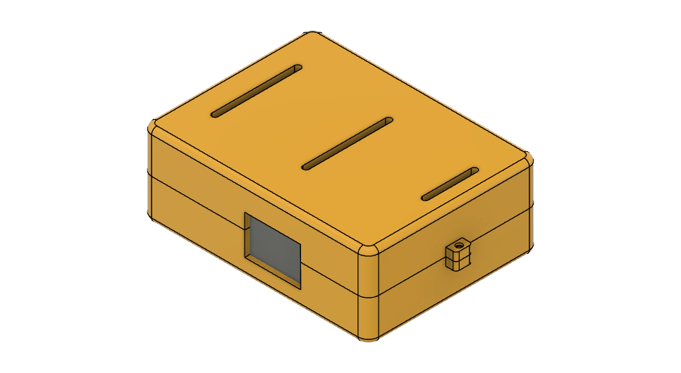
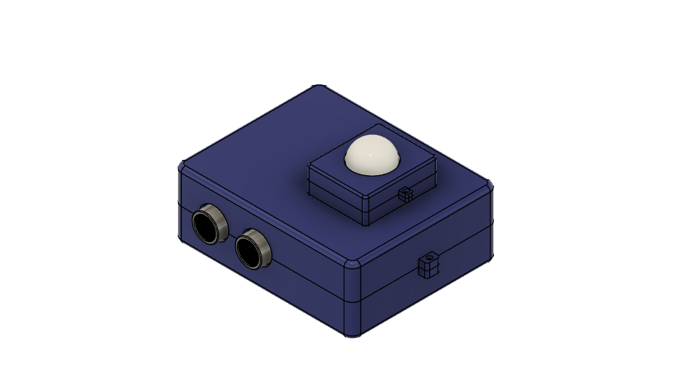
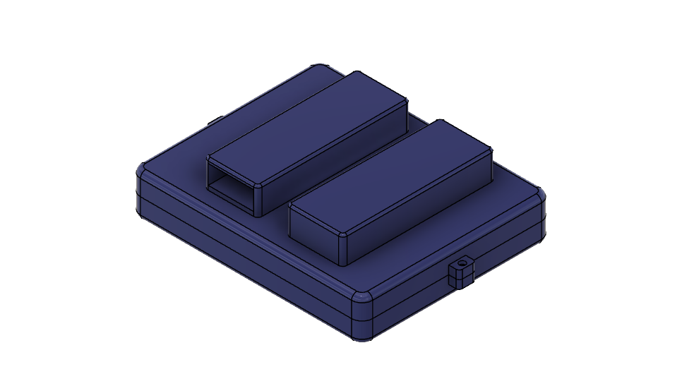
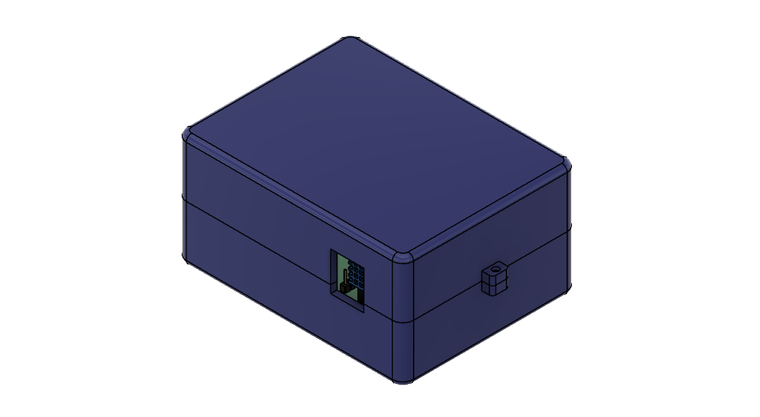
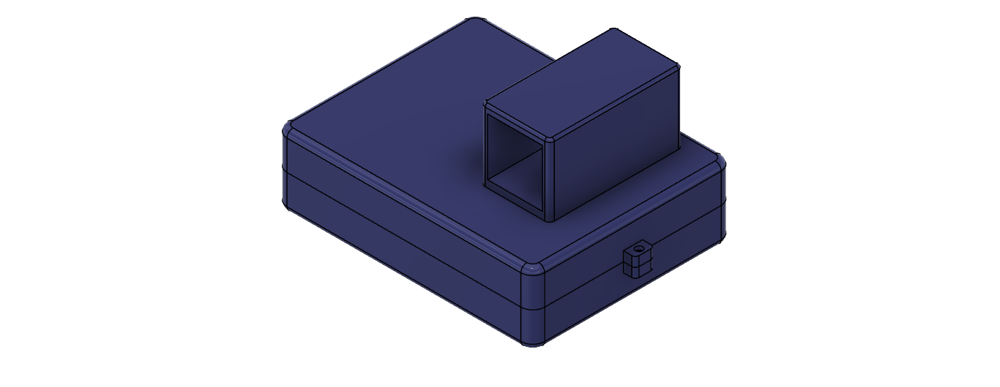

Main Board is a central and probably the most critical part of the whole given structure, which acts as the brain of the projects. It contains the ESP32 microcontroller that coordinates and controls all data and signals sent out by the sensors. This board has a sequence of female pin headers mounted on which other modules can simply be plugged in. These pin headers facilitate easy and firm insertion of module pins as well as enabling effective interaction between ESP32 microcontroller and the other modules.
Motion Module

The Motion Module targets to improve safety and to register intrusion by the incorporation of multiple sensors. It consists of an HCSR04 Ultrasonic Sensor, a Passive Infrared (PIR) Sensor, and a Buzzer.
• The HCSR04 Ultrasonic Sensor measures distances from the approaching objects by emitting ultrasonic waves and then getting the echoes and with the help of these echoes can detect motion in the monitored area.
• PIR Sensor is designed for the detection of infrared radiation, usually released by humans and warm-blooded animals. The principal characteristic of this sensor is its ability to detect motion, including that which is only slight, making it great for use in security systems.
• The buzzer being the alarm sounds when the activity is detected by any of the sensors: the PIR and the Ultrasonic.
*Click the image to view the schematic diagram of this module and see how each component is connected.
Smart Agriculture Module

The Smart Agriculture Module is designed to control and improve plant care by monitoring soil moisture and water levels, activating a water pump when needed. It consists of a Pump, a Relay, a Soil Moisture Sensor, and a Water Level Sensor.
• The pump is connected to a relay for wireless manual switching of the pump.
• The Soil Moisture Sensor determines the moisture level in the soil, ensuring the plant is watered at the right time. This sensor provides data on the ideal moisture level for optimal plant growth.
• The Water Level Sensor functions independently to monitor the water source, ensuring sufficient water availability. It alerts the user when the water level drops below a specified threshold, signaling the need for a refill.
*Click the image to view the schematic diagram of this module and see how each component is connected.
Smart Kitchen Module

The Smart Kitchen Module is made to monitor environmental conditions in the kitchen and helping to ensure safety within the vicinity. It features a DHT11 Humidity and Temperature Sensor and an MQ2 Gas Sensor, both essential for maintaining a safe kitchen environment as well as areas in the house where the module will be placed.
• Gas Sensor detects the presence of gases such as propane, methane, and smoke. This sensor is crucial in identifying gas leaks or smoke buildup, providing an early warning for potential fire hazards or gas leaks.
• The DHT11 Humidity and Temperature Sensor provides real-time readings of both humidity and temperature levels. This data can help keep the kitchen climate within comfortable and safe parameters, potentially alerting users if levels go outside the optimal range.
*Click the image to view the schematic diagram of this module and see how each component is connected.
Biometrics Module

The Attendance Monitoring Module is designed for automated monitoring and secure the process of tracking attendance with the use of a Fingerprint sensor.
• The Fingerprint Sensor is integrated for identification to ensure that only the authorized persons are recorded after fingerprint scan. This helps in security as fingerprints are only unique to a specific person, hence cannot be copied.
*Click the image to view the schematic diagram of this module and see how each component is connected.
ADVANCED IOT PROJECTS
Patient Health Monitoring System Using Raspberry Pi
Women Safety Device Using Internet of Things
A Web-Based Accident Reporting and Tracking System